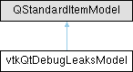

|
Etrek
|
|
Etrek
|
model class that observes the vtkDebugLeaks singleton More...
#include <vtkQtDebugLeaksModel.h>

Public Member Functions | |
| vtkQtDebugLeaksModel (QObject *p=nullptr) | |
| QList< vtkObjectBase * > | getObjects (const QString &className) |
| QStandardItemModel * | referenceCountModel (const QString &className) |
Protected Slots | |
| void | addObject (vtkObjectBase *object) |
| void | removeObject (vtkObjectBase *object) |
| void | registerObject (vtkObjectBase *object) |
| void | processPendingObjects () |
| void | onAboutToQuit () |
| Qt::ItemFlags | flags (const QModelIndex &index) const override |
model class that observes the vtkDebugLeaks singleton
This class is used internally by the vtkQtDebugLeaksView. It installs an observer on the vtkDebugLeaks singleton and uses the observer to maintain a model of all vtkObjectBase derived objects that are alive in memory.
| QList< vtkObjectBase * > vtkQtDebugLeaksModel::getObjects | ( | const QString & | className | ) |
Get the list of objects in the model that have the given class name
| QStandardItemModel * vtkQtDebugLeaksModel::referenceCountModel | ( | const QString & | className | ) |